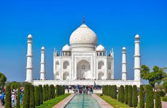
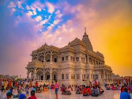

TOURIST PLACES IN MY STATE: UTTAR PRADESH
Key tourist destinations in Uttar Pradesh include Agra (Taj Mahal, Agra Fort),
Varanasi (a spiritual hub on the Ganges), Lucknow (the capital city),
Prayagraj (site of the Triveni Sangam), and Ayodhya (a holy city).
Other popular attractions include Fatehpur Sikri, Sarnath, and Dudwha National Park for wildlife.
Major Cities and Historical Sites
- Agra: Famous for the iconic Taj Mahal, Agra Fort, and Fatehpur Sikri, all of which are UNESCO World Heritage Sites.
- Varanasi: Known as the spiritual capital, it is home to Sarnath (where Buddha first preached) and the Dasaswamedh Ghat on the Ganges River.
- Lucknow: The state capital, offering a blend of history, architecture, and rich cultural heritage.
- Prayagraj: A holy city famous for the Triveni Sangam, where the Ganga, Yamuna, and Saraswati rivers meet.
- Ayodhya: A significant holy city and a major religious site.
- Chitrakoot: A serene and spiritually important location.
- Dudhwa National Park: Offers opportunities for wildlife encounters in a national park setting.
- Mathura: Another religiously significant city.
- Vrindavan: A town known for its religious significance and temples.

